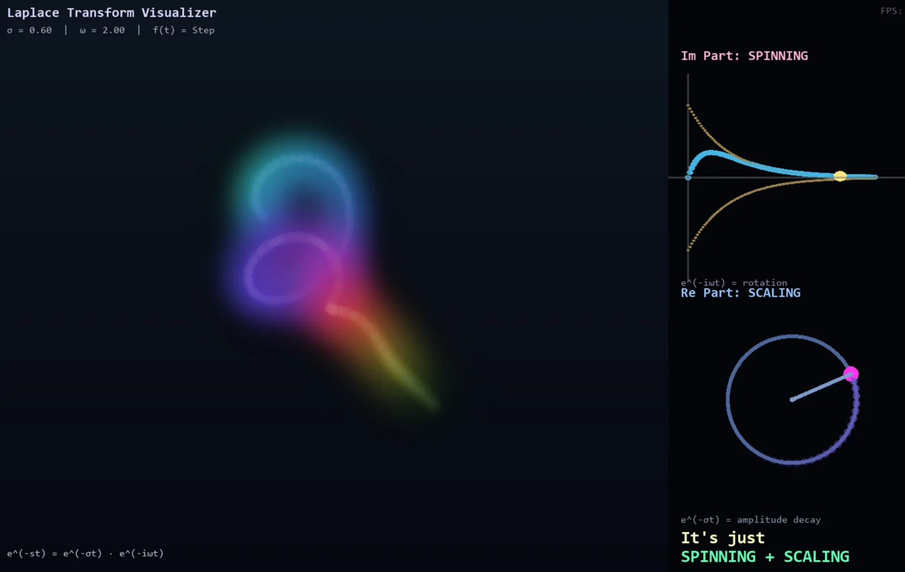
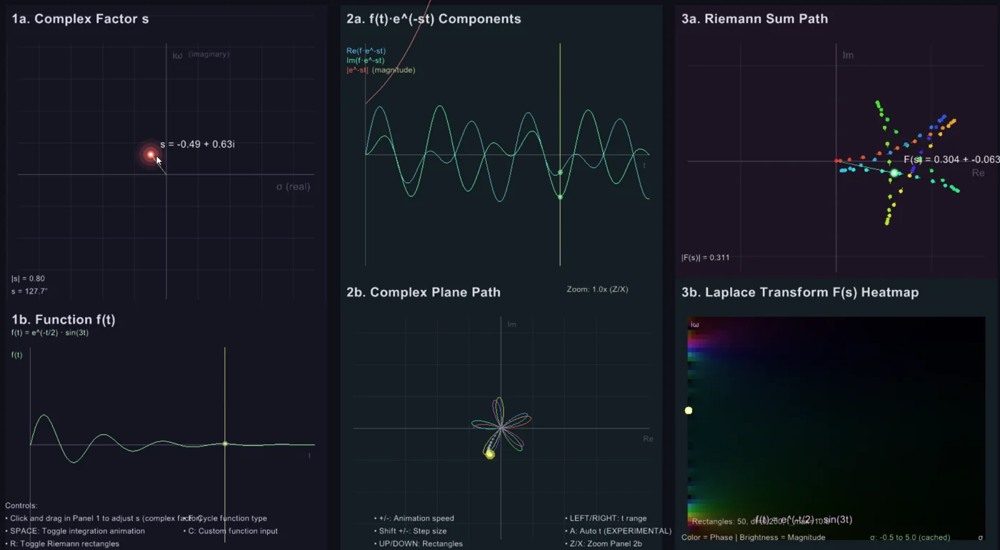
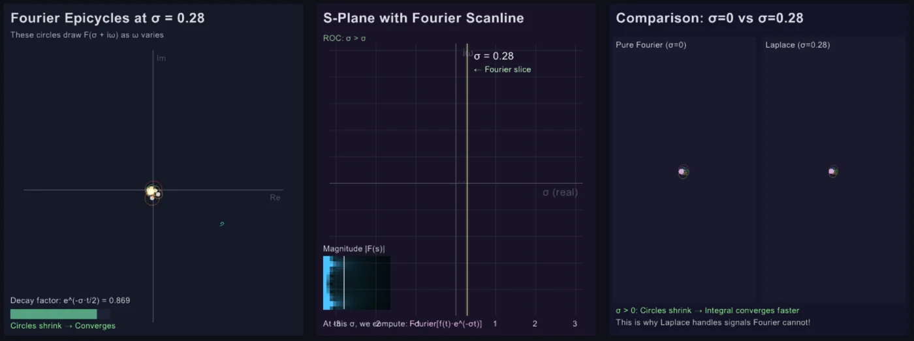

Interactive application
Interactive Video
Overview · selected highlights
Laplace transform studies
An exploratory notebook on making the Laplace transform feel natural. Reweight and wind a signal, move through complex frequency and reconstruct along a contour; echoes, convergence regions and time direction reveal what the extra real coordinate contributes beyond Fourier.
OscillateDecayIntegrate
- σ
Reweight time
Exponential weighting changes which part of the signal dominates.
- iω
Wind and accumulate
Complex rotation exposes cancellation at each chosen frequency.
- s
Explore the plane
Connect poles and convergence regions to the original time behavior.
- ∮
Recover the signal
Inspect contour reconstruction and the assumptions that make it meaningful.
A work in progress about new ways to see the transform, with its mathematical assumptions kept visible.



